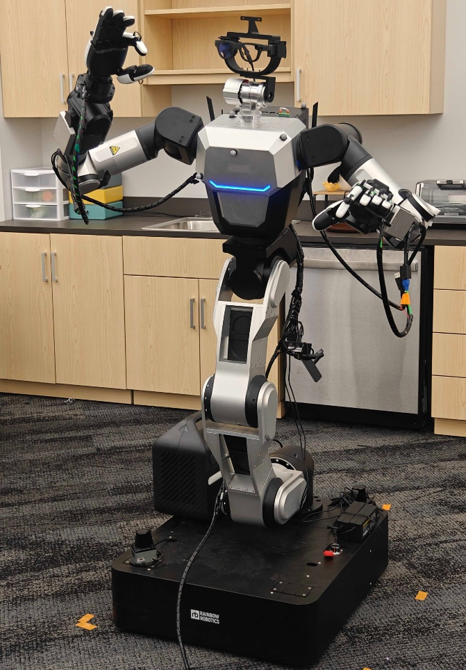

Closed-form retargeting
WARP
Matches the palm exactly as a hard constraint, then spends the remaining freedom preserving the human’s shoulder–elbow–wrist pose. Joint angles follow analytically: one unique solution per frame.
WARP paperCS 7633 · Fall 2026
Comparing WARP and Mink-based retargeting
Georgia Institute of Technology
Human motion can be retargeted to robots.
But matching an end-effector trajectory does not tell us how that motion feels to people.
We compare two offline human-to-robot retargeting methods, WARP and MINK-TE, and ask:
Which motions look more trustworthy, comfortable, natural, competent, and easy to understand?
Participants evaluate robot behaviors across a diverse set of manipulation tasks, using both simulation and real-world recordings.
The goal is simple: move beyond task-space accuracy and understand how retargeted robot motion is perceived by humans.
The comparison
Both methods start from the same human demonstration and drive the robot’s hands to follow it. They differ in how the rest of the body — torso, elbows, overall posture — is resolved, and that is what participants see.
Closed-form retargeting
Matches the palm exactly as a hard constraint, then spends the remaining freedom preserving the human’s shoulder–elbow–wrist pose. Joint angles follow analytically: one unique solution per frame.
WARP paperOptimization-based IK
Weighted inverse kinematics built on Mink: palm-pose tracking plus torso-orientation and elbow-swivel objectives. MINK-EF, the end-effector-only variant, opens the clip.
Mink libraryThe robot
A wheeled humanoid whose kinematics mirror the human upper body, so whole-body demonstrations map onto it naturally. Like a person, it is redundant: the same hand pose can be reached with many different arm and torso postures, and each retargeting method picks one.
